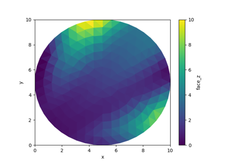

Examples#
The examples in this gallery demonstrate the functionality of the xugrid
package. Every example can be downloaded as either a Python script or a Jupyter
notebook for interactive exploration.



Plot unstructured mesh data
OverlapRegridder


Vector geometry conversion